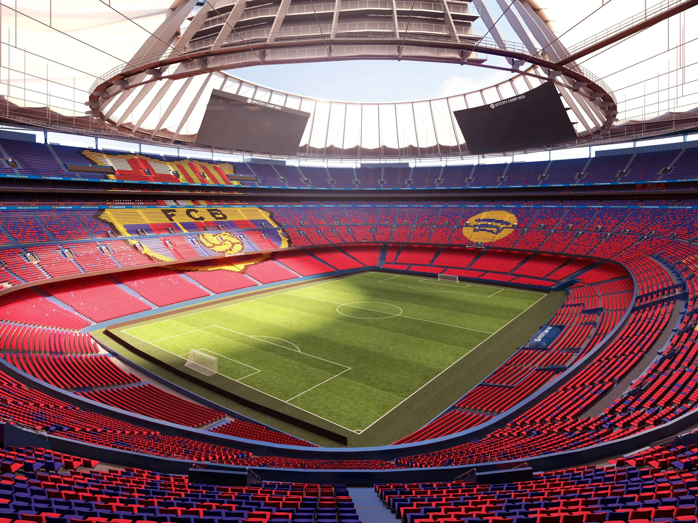

Willkommen auf meiner Barca-Fanseite
Hier findest du alles über den grössten Verein der Welt - seine Geschichte, seine Titel und seine Legenden.
Der Verein

Bild: Camp Nou (Quelle: Wikimedia Commons, CC BY-SA 3.0)
Der FC Barcelona, oft einfach Barca genannt, ist ein spanischer Fussballverein aus der katalanischen Hauptstadt Barcelona. Gegründet wurde der Klub am 29. November 1899 vom Schweizer Joan Gamper zusammen mit elf weiteren Spielern. Die Vereinsfarben blau und rot, auf Katalanisch Blaugrana, sind seither das Markenzeichen des Klubs.
Barca ist nicht nur einer der erfolgreichsten Fussballklubs der Welt, sondern auch ein Symbol für die katalanische Identität. Das Motto Mes que un club bedeutet übersetzt mehr als ein Verein und steht für die kulturelle und politische Bedeutung des Klubs in der Region. Die Heimspiele werden im legendären Spotify Camp Nou ausgetragen, dem grössten Stadion Europas mit fast 100.000 Plätzen.
Auf dieser Webseite habe ich die wichtigsten Themen rund um den FC Barcelona zusammengefasst. Du findest eine Übersicht über die Geschichte, eine Liste der wichtigsten Titel und eine Vorstellung der erfolgreichsten Torschützen. Ausserdem zeige ich einige der grössten Legenden, die je das Trikot getragen haben. Die Seite ist Teil meiner Leistungsbeurteilung im Modul 293 an der Berufsfachschule BBB. Viel Spass beim Stöbern und Visca el Barca!
Was dich auf dieser Seite erwartet
Unter Geschichte findest du die wichtigsten Stationen des Klubs von 1899 bis heute. Im Bereich Titel siehst du die Anzahl der gewonnenen Trophäen auf nationaler und internationaler Ebene. Bei den Top Scorern habe ich die erfolgreichsten Torjäger der Vereinsgeschichte aufgelistet. Die Legenden-Seite stellt einige Spieler vor, die den Klub geprägt haben. Auf der letzten Seite erfährst du noch ein paar Infos über mich selbst.